with mirror reflectance
with mirror reflectance  , multiple reflections give the Airy transmission
, multiple reflections give the Airy transmission  ,
,  .
.
Two-beam interference
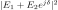
gives the formula above; visibility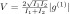
, where is the degree of coherence (Young 1804). Michelson and Mach–Zehnder interferometers measure
is the degree of coherence (Young 1804). Michelson and Mach–Zehnder interferometers measure 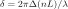
.Fabry–Perot (derivation)
Field transmitted after  round trips:
round trips:
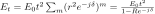
, with round-trip phase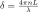
(normal incidence, lossless mirrors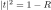
) (Pérot and Fabry 1899). Then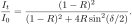
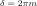
: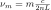
(longitudinal modes). FWHM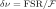
; quality factor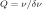
; photon lifetime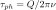
.Picture
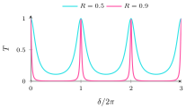
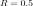
and : higher reflectance gives sharper resonances and higher finesse.Dielectric (Bragg) mirror
Alternating quarter-wave layers
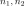
: all reflections add in phase at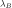
. Reflectance after pairs
pairs 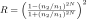
, stop bandwidth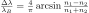
. Basis of VCSEL mirrors, Bragg gratings and photonic crystals.Worked example
Semiconductor laser chip,  µm,
µm,  (
(
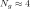
for mode spacing): FSR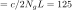
GHz, i.e.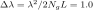
nm at 1550 nm. Facet :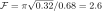
— low finesse, which is fine because the gain medium compensates.Engineering applications
Laser cavities, wavelength lockers and etalon filters, thin-film filters for DWDM, anti-reflection coatings (quarter-wave layer), Fabry–Perot fibre sensors, VCSEL DBR mirrors.
Exam-style exercise
A scanning Fabry–Perot spectrum analyser has an air gap of 1 cm and mirrors
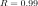
. (a) FSR, finesse, resolution. (b) Can it resolve the modes of a 30 cm He–Ne laser? (c) Light hits a 0.5 mm glass etalon ( , ) at 1550 nm: FSR in nm and number of peaks in the C band (1530–1565 nm).
, ) at 1550 nm: FSR in nm and number of peaks in the C band (1530–1565 nm).
Solution
(a) FSR
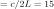
GHz,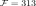
,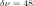
MHz. (b) Modes 500 MHz apart, gain width 1.5 GHz < FSR: yes, about 3 peaks per FSR, each resolved 10× over. (c) FSR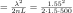
µm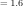
nm (200 GHz);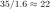
peaks — an etalon of this kind is a DWDM wavelength reference (locker).Pitfall
FSR uses the group index when computing mode spacing in a dispersive medium; using the phase index gives wrong spacing in semiconductors (error ~10%).